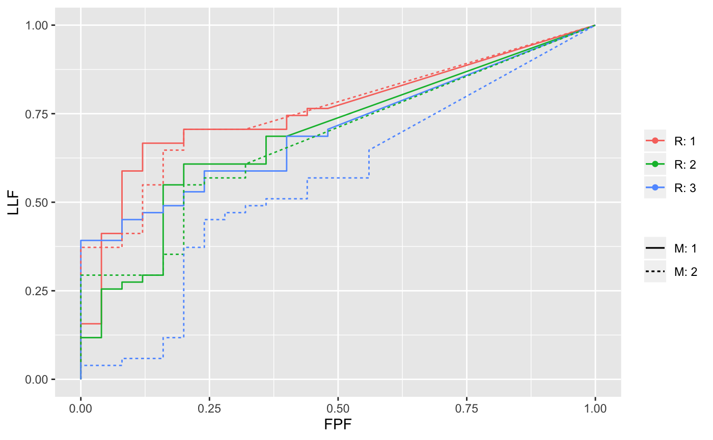

Convert ratings arrays to an RJafroc dataset
Df2RJafrocDataset.RdConverts ratings arrays, ROC or FROC, not LROC, to an RJafroc dataset, thereby allowing the user to leverage the file I/O, plotting and analyses capabilities of RJafroc.
Df2RJafrocDataset(NL, LL, ...)
Arguments
| NL | Non-lesion localizations array (or FP array for ROC data). |
|---|---|
| LL | Lesion localizations array (or TP array for ROC data). |
| ... | Other elements of RJafroc dataset that may, depending on the context, need to be specified.
|
Value
A dataset with the structure described in RJafroc-package.
Details
The function "senses" the data type (ROC or FROC) from the the absence or presence of lesionVector.
ROC data can be NL[1:K1] and LL[1:K2] or NL[1:I,1:J,1:K1] and LL[1:I,1:J,1:K2].
FROC data can be NL[1:K1,1:maxNL] and LL[1:K2, 1:maxLL] or NL[1:I,1:J,1:K1,1:maxNL] and
LL[1:I,1:J,1:K2,1:maxLL].
Here maxNL/maxLL = maximum numbers of NLs/LLs, per case, over entire dataset.
Equal weights are assigned to every lesion (FROC data).
Consecutive characters/integers starting from "1" are assigned to lesionID, modalityID and readerID.
Examples
set.seed(1) NL <- rnorm(5) LL <- rnorm(7)*1.5 + 2 dataset <- Df2RJafrocDataset(NL, LL) # an ROC dataset I <- 2;J <- 3;set.seed(1) K1 <- 25;K2 <- 35 z1 <- array(dim = c(I, J, K1)) z2 <- array(dim = c(I, J, K2)) mu <- 2;sigma <- 1.5 for (i in 1:I) { for (j in 1:J) { z1[i,j,1:K1] <- rnorm(K1) z2[i,j,] <- rnorm(K2) * sigma + mu } } dataset <- Df2RJafrocDataset(z1, z2) ## note lesionVector consists of 1s; i.e., an ROC dataset set.seed(1) mu <- 1;lambda <- 1;nu <- 1; zeta1 <- 0 K1 <- 5;K2 <- 7 Lmax <- 2;Lk2 <- floor(runif(K2, 1, Lmax + 1)) frocDataRaw <- SimulateFrocDataset(mu, lambda, nu, zeta1, I = 1, J = 1, K1, K2, lesionVector = Lk2) NL <- drop(frocDataRaw$NL) LL <- drop(frocDataRaw$LL) dataset <- Df2RJafrocDataset(NL, LL, lesionVector = Lk2) ## note lesionVector is not all 1s, signalling an FROC dataset ## Simulate FROC dataset, convert to dataset object, display ROC, FROC and AFROC curves I <- 2;J <- 3;set.seed(1) K1 <- 25;K2 <- 35 mu <- 1;nuP <- 0.8;lambdaP <- 1;zeta1 <- 0 lambda <- UtilPhysical2IntrinsicRSM(mu,lambdaP,nuP)$lambda nu <- UtilPhysical2IntrinsicRSM(mu,lambdaP,nuP)$nu Lmax <- 2;Lk2 <- floor(runif(K2, 1, Lmax + 1)) z1 <- array(-Inf,dim = c(I,J,K1+K2,40)) z2 <- array(-Inf,dim = c(I,J,K2,40)) dimNL <- array(dim=c(I,J,2)) ## the last value (2) accommodates case and location indices dimLL <- array(dim=c(I,J,2)) for (i in 1:I) { for (j in 1:J) { frocDataRaw <- SimulateFrocDataset(mu, lambda, nu, zeta1, I = 1, J = 1, K1, K2, lesionVector = Lk2) dimNL[i,j,] <- dim(drop(frocDataRaw$NL)) dimLL[i,j,] <- dim(drop(frocDataRaw$LL)) z1[i,j,,1:dimNL[i,j,2]] <- drop(frocDataRaw$NL) # drop the excess location indices z2[i,j,,1:dimLL[i,j,2]] <- drop(frocDataRaw$LL) } } z1 <- z1[,,,1:max(dimNL[,,2])] z2 <- z2[,,,1:max(dimLL[,,2])] dataset <- Df2RJafrocDataset(z1, z2, lesionVector = Lk2) retPlot <- PlotEmpiricalOperatingCharacteristics(dataset, trts = seq(1,I), rdrs = seq(1,J), opChType = "ROC") print(retPlot$Plot)retPlot <- PlotEmpiricalOperatingCharacteristics(dataset, trts = seq(1,I), rdrs = seq(1,J), opChType = "FROC") print(retPlot$Plot)retPlot <- PlotEmpiricalOperatingCharacteristics(dataset, trts = seq(1,I), rdrs = seq(1,J), opChType = "AFROC") print(retPlot$Plot)